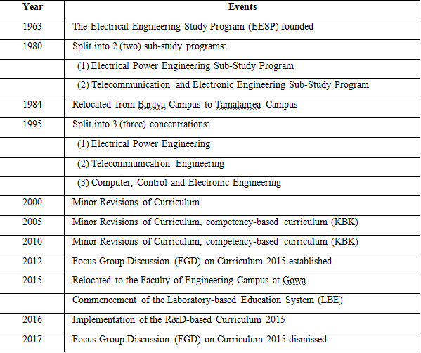
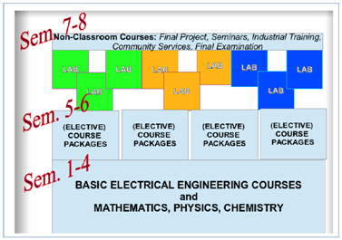

History
The Electrical Engineering Study Program (EESP) at Hasanuddin University, Makassar, Indonesia was founded in 1963 as a part of the Faculty of Engineering established a few years earlier. The campus was originally located at Baraya, near the downtown of Ujung Pandang which was the old name of the city of Makassar. In early 1980s, the university campus was relocated to Tamalanrea, about 10 km north-east of downtown Makassar. More than 30 years later, the Faculty of Engineering was relocated again to its new campus at Gowa, 20 km south of Tamalanrea, and the EESP - under the Department of Electrical Engineering - officially settled at its new facilities in the new campus at Gowa in 2017.
During the first years after its establishment in mid 1960s, most EESP students of Hasanuddin University continued and completed their undergraduate degrees in 2 (two) major universities in Indonesia, namely Gadjah Mada University (UGM) in Yogyakarta and Bandung Institute of Technology (ITB) in Bandung. The majority of the graduates from this period made their careers as academicians, or as engineers at the state-owned power company (PLN) and telecommunication (TELKOM), or started their own private companies related to electricity and telephone businesses.
A major change of curriculum was implemented in 1980. The EESP was split into 2 (two) sub-study programs or concentrations, namely: (1) The Electrical Power Engineering and (2) The Telecommunication and Electronic Engineering. It was an 8 (eight) semester undergraduate engineering study program provided in 4 (four) academic years. In the first three semesters, the students took common courses on the fundamentals of Electrical Engineering and the required mathematics, physics and chemistry. Beginning at the fourth semester, the students voluntarily selected their preferences of concentration, and took different required and elective courses accordingly.
The next stage of curriculum development was started in 1995. A new concentration was established by divided the Telecommunication and Electronic Engineering sub-study program into 2 (two), i.e. (1) The Telecommunication Engineering and Information Systems, and (2) The Computer, Control and Electronic Engineering sub-study programs. Common courses for both new concentrations were listed until the fourth semester. The basis of the curriculum establishment was the nationally decreed higher education curriculum development in Indonesia: Competency-Based Curriculum (KBK).
Most recently, a major change in the EESP curriculum was made related to the campus relocation to Gowa in 2015. The new campus is designed to support the Laboratory-based Education (LBE) system adopted by the Faculty of Engineering. By this time the EESP has established its Masters and Doctoral Degree programs supported by no less than 20 research laboratories and working groups. The process of curriculum development was managed by a Focus Group Discussion (FGD) on Curriculum 2015 in a 5 (five) year working period from 2012 to 2017, with a tagline: “From Competency To Contribution”.
The main idea of the recent curriculum change is to extend the competency-based curriculum previously implemented to a brand new curriculum called the “R&D-(research and development)-based curriculum”. The existing (since 1995) three concentrations were discontinued and all merged back to only one EESP. The curriculum structure is now composed of 4 (four) semesters of fundamentals and 2 (two) semesters of (elective) course packages to develop the competency, and the final laboratory-based, or R&D-based, 2 (two) semesters to make the contribution.

The timeline of the EESP 55 year history is summarized in Table 1-1. After 1995, in fact the EESP curriculum has been revised every 5 (five) years, in 2000, 2005 and 2010 consecutively, but only with minor revisons.
Most recently, a major change in the EESP curriculum was made related to thecampus relocation to Gowa in 2015. The new campus is designed to support theLaboratory-based Education (LBE) system adopted by the Faculty of Engineering. Bythis time the EESP has established its Masters and Doctoral Degree programssupported by no less than 20 research laboratories and working groups (see Table 1-2in the next section). The process of curriculum development was managed by a FocusGroup Discussion (FGD) on Curriculum 2015 in a 5 (five) year working period from2012 to 2017, with a tagline: “From Competency To Contribution”.
The main idea of the recent curriculum change is to extend the competency-basedcurriculum previously implemented to a brand new curriculum called the “R&D (research and development)-based curriculum”. The existing (since 1995) threeconcentrations were discontinued and all merged back to only one EESP. Thecurriculum structure is now composed of 4 (four) semesters of fundamentals and 2(two) semesters of (elective) course packages to develop the competency, and the final laboratory-based, or R&D-based, 2 (two) semesters to make the contribution(see Figure 1-1).
The timeline of the EESP 55 year history is summarized in Table 1-1. After 1995, infact, the EESP curriculum has been revised every 5 (five) years, in 2000, 2005 and2010 consecutively, but only with minor revisions.
